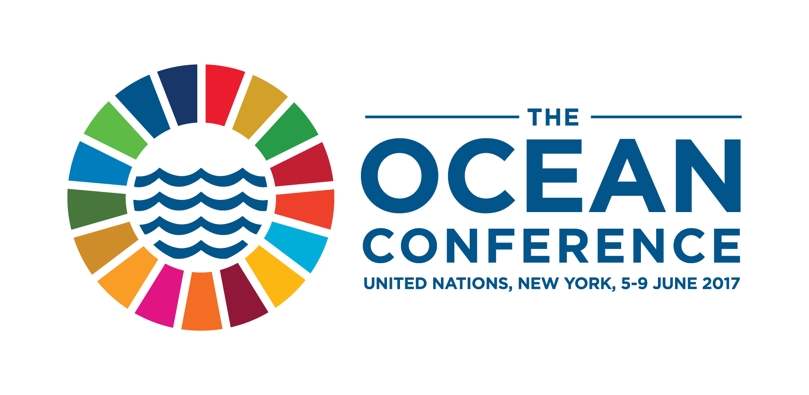

Goal 14: Conserve and sustainably use the oceans, seas and marine resources

The world’s oceans – their temperature, chemistry, currents and life – drive global systems
that make the Earth habitable for humankind.
Our rainwater, drinking water, weather, climate, coastlines, much of our food, and even
the oxygen in the air we breathe, are all ultimately provided and regulated by the sea.
Throughout history, oceans and seas have been vital conduits for trade and transportation.
Careful management of this essential global resource is a key feature of a sustainable
future.
Goal Targets
1) By 2025, prevent and significantly reduce marine pollution of all kinds, in particular from land-
based activities, including marine debris and nutrient pollution.
2) By 2020, sustainably manage and protect marine and coastal ecosystems to avoid significant adverse
impacts, including by strengthening their resilience, and take action for their restoration in
order to achieve healthy and productive oceans.
3) Minimize and address the impacts of ocean acidification, including through enhanced scientific cooperation
at all levels.
4) By 2020, effectively regulate harvesting and end overfishing, illegal, unreported and unregulated fishing and
destructive fishing practices and implement science-based management plans, in order to restore fish
stocks in the shortest time feasible, at least to levels that can produce maximum sustainable yield
as determined by their biological characteristics.
4) By 2020, conserve at least 10 per cent of coastal and marine areas, consistent with national and international
law and based on the best available scientific information.
5) By 2020, prohibit certain forms of fisheries subsidies which contribute to overcapacity and overfishing,
eliminate subsidies that contribute to illegal, unreported and unregulated fishing and refrain from
introducing new such subsidies, recognizing that appropriate and effective special and differential
treatment for developing and least developed countries should be an integral part of the World Trade
Organization fisheries subsidies negotiation.
6) By 2030, increase the economic benefits to Small Island developing States and least developed countries
from the sustainable use of marine resources, including through sustainable management of fisheries,
aquaculture and tourism.
7) Increase scientific knowledge, develop research capacity and transfer marine technology, taking into
account the Intergovernmental Oceanographic Commission Criteria and Guidelines on the Transfer of
Marine Technology, in order to improve ocean health and to enhance the contribution of marine
biodiversity to the development of developing countries, in particular small island developing
States and least developed countries.